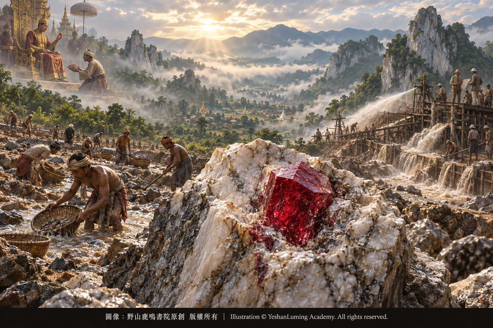

產地傳奇 · 緬甸莫谷（Mogok）無法超越的紅寶石聖地Legendary Origins · Mogok, Myanmar—the Unrivaled Sacred Land of Rubies
The World of Gemstones · Ruby SeriesLegendary Origins · Mogok, Myanmar—the Unrivaled Sacred Land of Rubies
The World of Gemstones · Ruby Series產地傳奇 · 緬甸莫谷（Mogok）無法超越的紅寶石聖地
寶石世界·紅寶石篇
寶石世界·紅寶石篇（104）The World of Gemstones · Ruby Series (104)
在地球上，有些地名的存在本身就是傳奇。對於鑽石，它是南非的金伯利；對於翡翠，它是緬甸的帕敢；而對於紅寶石，全世界的收藏家、拍賣行與寶石學家，幾乎都不會忽略一個如同至高聖殿般的名字——緬甸莫谷（Mogok）。
莫谷坐落在緬甸曼德勒省東北部，是一片被綿延群山環抱的高原谷地。山間雲霧繚繞，雨水充沛，古老的大理岩在地表形成奇特的灰白色山峰。在過去數百年間，這片分布於群山之間的寶石礦區，曾經為世界貢獻了大量品質卓越、價值驚人的紅寶石。
在今天的珠寶拍賣市場上，如果一顆高品質紅寶石被權威寶石實驗室判定產自緬甸莫谷，它往往能夠獲得顯著的產地溢價。當然，莫谷產地並不能單獨決定紅寶石的價值；它仍然必須與顏色、透明度、淨度、重量、切工及有無處理等條件共同評估。
然而，當一顆紅寶石既擁有優美的顏色和良好的透明度，又被證明產自莫谷，而且沒有發現加熱跡象時，它便可能躋身世界最珍貴紅寶石的行列。
莫谷究竟擁有怎樣的魔力，能夠讓全世界為之傾倒？
要解開莫谷的神話，我們必须先穿透籠罩山谷的濃霧，進入它古老而複雜的地質世界。
在前面的文章中，我們曾經談到，天然紅寶石的形成，是一場條件極其苛刻的地質奇蹟。它需要適當的鋁和鉻來源，也需要極低的矽含量、高溫高壓、流體活動、結晶空間及漫長時間等多項條件共同配合。
大約五千萬年前，印度板塊持續向北運動，並與歐亞板塊發生碰撞。這場規模宏大的大陸碰撞，不僅促成了喜馬拉雅山脈的隆升，也使亞洲南部和東南部的廣大地區經歷了複雜的構造運動與區域變質作用。
在莫谷地區，古老海洋環境中形成的含雜質石灰岩，被埋藏到地殼深處，在高溫和高壓作用下重新結晶，逐漸轉變成大理岩（Marble）。
在這場複雜的變質作用中，富含鹽分和二氧化碳的流體在岩石縫隙間遷移，促進鋁、鉻、鎂、釩等元素重新分配。當不同元素、溫度、壓力和流體條件達到微妙平衡時，剛玉晶體開始形成；其中一部分鉻元素進入正在生長的剛玉晶格，原本無色的剛玉便呈現出紅色，成為紅寶石。
在地球上，有些地名的存在本身就是傳奇。對於鑽石，它是南非的金伯利；對於翡翠，它是緬甸的帕敢；而對於紅寶石，全世界的收藏家、拍賣行與寶石學家，幾乎都不會忽略一個如同至高聖殿般的名字——緬甸莫谷（Mogok）。
莫谷坐落在緬甸曼德勒省東北部，是一片被綿延群山環抱的高原谷地。山間雲霧繚繞，雨水充沛，古老的大理岩在地表形成奇特的灰白色山峰。在過去數百年間，這片分布於群山之間的寶石礦區，曾經為世界貢獻了大量品質卓越、價值驚人的紅寶石。
在今天的珠寶拍賣市場上，如果一顆高品質紅寶石被權威寶石實驗室判定產自緬甸莫谷，它往往能夠獲得顯著的產地溢價。當然，莫谷產地並不能單獨決定紅寶石的價值；它仍然必須與顏色、透明度、淨度、重量、切工及有無處理等條件共同評估。
然而，當一顆紅寶石既擁有優美的顏色和良好的透明度，又被證明產自莫谷，而且沒有發現加熱跡象時，它便可能躋身世界最珍貴紅寶石的行列。
莫谷究竟擁有怎樣的魔力，能夠讓全世界為之傾倒？
要解開莫谷的神話，我們必须先穿透籠罩山谷的濃霧，進入它古老而複雜的地質世界。
在前面的文章中，我們曾經談到，天然紅寶石的形成，是一場條件極其苛刻的地質奇蹟。它需要適當的鋁和鉻來源，也需要極低的矽含量、高溫高壓、流體活動、結晶空間及漫長時間等多項條件共同配合。
大約五千萬年前，印度板塊持續向北運動，並與歐亞板塊發生碰撞。這場規模宏大的大陸碰撞，不僅促成了喜馬拉雅山脈的隆升，也使亞洲南部和東南部的廣大地區經歷了複雜的構造運動與區域變質作用。
在莫谷地區，古老海洋環境中形成的含雜質石灰岩，被埋藏到地殼深處，在高溫和高壓作用下重新結晶，逐漸轉變成大理岩（Marble）。
在這場複雜的變質作用中，富含鹽分和二氧化碳的流體在岩石縫隙間遷移，促進鋁、鉻、鎂、釩等元素重新分配。當不同元素、溫度、壓力和流體條件達到微妙平衡時，剛玉晶體開始形成；其中一部分鉻元素進入正在生長的剛玉晶格，原本無色的剛玉便呈現出紅色，成為紅寶石。
這類在大理岩環境中形成的紅寶石礦床，在寶石學上通常被稱為「大理岩型紅寶石礦床」。
莫谷並不是世界上唯一的大理岩型紅寶石產地。越南、阿富汗、塔吉克斯坦以及緬甸其他地區，也存在與大理岩有關的紅寶石礦床。但是，莫谷紅寶石憑藉悠久的開採歷史、眾多傳世名石，以及部分頂級寶石所展現出的鮮豔紅色和強烈螢光，建立了其他產地難以取代的歷史地位。
大理岩型紅寶石通常形成於相對低鐵的地球化學環境中。與泰國、柬埔寨等部分高鐵紅寶石相比，許多莫谷紅寶石的鐵含量較低，而鉻則是其紅色與紅色螢光的主要來源。
這種化學成分的組合，為部分優質莫谷紅寶石帶來了兩項令人著迷的光學特徵。
第一，是鮮明而富有生命力的紅色。
鐵、鉻、釩以及不同價態元素之間的相互作用，都可能影響紅寶石的色調和明度。許多莫谷紅寶石因為鐵含量相對較低，較少受到某些與鐵有關的光學吸收影響。當鉻含量、色調、明度和飽和度達到理想配合時，寶石便可能呈現出純正、鮮豔而又明亮的紅色，仿佛一團凝固在晶體深處的火焰。
第二，是鮮明的紅色螢光。
當鉻元素受到紫外線或其他適當能量的激發時，可能發出紅色螢光；較高的鐵含量則往往會抑制這種螢光。因此，部分低鐵而富鉻的莫谷紅寶石，在含有紫外線的日光下，可以呈現出明顯甚至強烈的紅色螢光。
這種螢光與寶石本身反射和透射的紅光相互疊加，使一些優質莫谷紅寶石仿佛從內部亮起，展現出鮮活、濃烈而富有生命感的霓虹紅色。這也成為人們談論莫谷「鴿血紅」時最津津樂道的特徵之一。
不過，並非所有莫谷紅寶石都具有相同程度的螢光，也不是所有具有強烈紅色螢光的紅寶石都來自莫谷。越南、阿富汗和塔吉克斯坦等大理岩型產地，也可能出產低鐵、富鉻而具有明顯螢光的紅寶石。因此，顏色和螢光可以帶來初步印象，卻不能單獨證明一顆紅寶石的產地。
莫谷的傳奇，不僅寫在岩石、元素與光譜中，也寫在古老礦區數百年的權力、財富與人性故事之中。
有關緬甸紅寶石的歷史記載，至少可以追溯到公元六世紀。到了十六世紀末，緬甸國王取得莫谷礦區的控制權。此後，莫谷紅寶石逐漸受到王室嚴格管制，體積或價值達到一定標準的重要寶石，必須上繳國王。
在那個時代，莫谷流傳著一則充滿血色的民間傳說。
相傳，有一名叫作Nga Mauk的礦工，在莫谷發現了一顆巨大而美麗的紅寶石原石。按照當時的規定，這樣的重要寶石必須完整地獻給國王。但是，面對足以改變命運的財富，Nga Mauk最終沒有抵擋住誘惑。
他將這顆紅寶石從中分開，把其中一半獻給國王，另一半則秘密賣給一名中國商人。他原以為兩半紅寶石從此天各一方，自己的祕密永遠不會被人發現。
然而，命運卻讓失散的兩半紅寶石再次相遇。
傳說那名中國商人後來將另外半顆紅寶石送入一位中國王公手中；經過輾轉流傳，它最終又被作為珍貴禮物獻給緬甸國王。國王把兩半紅寶石放在一起，發現它們的斷面竟然完全吻合，這才明白Nga Mauk欺騙了王室。
國王盛怒之下，下令将Nga Mauk及其家人處死。相傳，他們被烈火焚燒；Nga Mauk的妻子Daw Nan Kyi當時正在山上採集木柴，遠遠望見家園被火焰吞沒，最終在悲痛中死去。直到今天，莫谷附近仍有一座山丘被稱為Daw Nan Kyi山，以紀念這則令人心碎的傳說。
那顆被重新合在一起的紅寶石，後來被人們稱為「Nga Mauk Ruby」。它是否真的完全如傳說所述，今天已經很難得到確切證實；但是，这个故事却在莫谷流传了数百年，成为王权、财富、贪婪与悲剧共同留下的一道血色印记。
到了十九世紀末，莫谷的命運再次被外來力量改變。
1886年，英國佔領上緬甸。1889年，英國人成立緬甸紅寶石公司（Burma Ruby Mines Ltd.），取得莫谷礦區的開採權，並引進水炮、洗礦設備及其他機械化方法，開始進行大規模工業化開採。
為了開採莫谷城鎮地下富含寶石的沖積砂礫層，公司甚至移動部分城鎮。大量泥土被水力沖刷，埋藏在砂礫中的紅寶石、尖晶石、藍寶石及其他寶石被集中、篩選，再送往世界各地。
這一時期，莫谷紅寶石大量進入歐洲珠寶市場，也使「緬甸紅寶石」逐漸成為西方收藏家心目中頂級紅寶石的象徵。
但是，緬甸紅寶石公司的經營並非一帆風順。洪水、盜採、營運成本，以及合成紅寶石出現後引發的市場恐慌與價格波動，都對公司造成巨大壓力。1931年，這家公司最終退出莫谷。
大規模機械化開採改變了莫谷部分礦區的地貌，也消耗了許多容易取得的沖積礦層，但莫谷並未因此完全枯竭。此後，當地居民仍然以不同方式持續採礦。直到今天，這片古老山谷依然偶爾向人類交出令人驚歎的寶石。

Click to enlarge
那麼，作為寶石鑑定師，當我們把一顆高價紅寶石放到顯微鏡下，又該如何判斷它是否真的來自傳奇的莫谷？
莫谷大理岩型紅寶石的生長環境，在寶石內部留下了一幅複雜而迷人的「微觀包裹體地圖」。
在顯微鏡下，莫谷紅寶石最著名的內部特徵之一，是金紅石針狀包裹體（Rutile Needles），也就是珠寶界通常所說的「絲絹」。
莫谷紅寶石中的金紅石絲絹，可能由細長或短小的針狀晶體組成，有時呈現密集的巢狀分布；有些短小金紅石針还具有扁平、反光或近似箭头的外观。在适当照明下，这些细密针状包裹体会反射出柔和而迷人的丝绢光泽。
如果細密的金紅石針依照剛玉晶體結構定向排列，而且原石沿適當方向切磨成弧面形，便可能形成珍貴的星光紅寶石，在單一光源下顯現出神祕的六射星芒。
除了金紅石絲絹，莫谷紅寶石中還可能看到方解石（Calcite）、磷灰石（Apatite）、尖晶石（Spinel）及其他礦物晶體。有些晶體輪廓圓潤，有些則被細小裂隙包圍，仿佛一座座沉睡在紅色海洋深處的小島。
部分莫谷紅寶石還會呈現出特殊的漩渦狀或攪動狀生長紋理（Roiled Graining）。紅色與近乎無色的區域相互交錯，如同濃稠糖漿在水中緩慢旋轉，形成流動而不規則的內部紋路。
巢狀金紅石絲絹、具有特殊外形的短小金紅石針、礦物晶體，以及漩渦狀生長紋理等特徵，經過有經驗的寶石鑑定師綜合觀察，可以為莫谷紅寶石產地提供重要線索。
但是，必須強調：這些包裹體都不是莫谷紅寶石獨有的「身份證」。
越南、阿富汗、塔吉克斯坦等大理岩型紅寶石，形成於相似的地質環境，也可能含有金紅石絲絹、方解石、磷灰石及類似的生長紋理。某些越南紅寶石的內部景象，甚至可能與莫谷紅寶石非常接近。
因此，看到金紅石針，不能立刻斷定它來自莫谷；看到方解石晶體，也不能把它視為莫谷獨有的「親子鑑定印記」。
在現代寶石實驗室中，紅寶石產地鑑定是一項需要多種證據相互印證的專業工作。
紅寶石的折射率通常約為1.762至1.770，雙折射率約為0.008，比重约为4.00。这些数值可以帮助鉴定师确认宝石是否符合刚玉的基本性质，却不能用来判断它是否来自莫谷，因为世界各地天然红宝石的基本物理常数大致相同。
紫外線螢光同樣只能提供參考。許多低鐵莫谷紅寶石在長波紫外線下可以呈現明顯至強烈的紅色螢光，但不同樣品之間可能存在很大差異，短波紫外線反應也未必完全相同。其他大理岩型產地的紅寶石，同樣可能具有強烈紅色螢光。
因此，設備完善的國際寶石實驗室通常會首先觀察紅寶石的金紅石絲絹、礦物晶體、色帶、生長紋理及流體包裹體，再結合紫外—可見—近紅外光譜、紅外光譜及微量元素分析，研究其中鉻、鐵、釩、鎵等元素的含量与比例。
實驗室還必須將這些資料，與從世界各主要礦區採集、產地確定的標準樣品，以及長期建立的產地數據庫進行比較，才能作出最後判斷。
即使如此，紅寶石的產地鑑定仍然不是百分之百簡單明確。由於莫谷與越南、阿富汗、塔吉克斯坦等大理岩型紅寶石，在包裹體景象和微量元素組成上可能出現重疊，少數樣品即使經過全面檢測，仍然可能無法得到確定結論。
在這種情況下，負責任的寶石實驗室不會勉強猜測，而會把產地結論列為「不確定」（Inconclusive）。
這也正是紅寶石產地鑑定最困難、同时也最令人着迷的地方：宝石不会主动告诉我们自己来自哪里，鉴定师只能根据晶体内部留下的蛛丝马迹，尽可能还原它数千万年的生命历程。
莫谷的神話，是古老海洋沉積物經歷高溫高壓後的一次重生，是印度板塊與歐亞板塊碰撞留下的地質回聲，也是數百年來無數礦工在迷霧、山岩與泥濘中的生死追尋。
今天，莫桑比克、越南、馬達加斯加及其他新興產地，已经开采出许多体积更大、净度更高，甚至足以与莫谷红宝石相互媲美的优质宝石。评价一颗红宝石，也绝不能只看产地名称，而忽略宝石本身的美丽与品质。
但是，在真正的彩色寶石收藏家心中，那一抹承載著古老王朝、殖民礦業、地質奇蹟與人性傳說的莫谷紅色，依然具有無法複製的歷史重量。
當一顆頂級莫谷紅寶石在日光下展現出鮮活的紅色與燦爛螢光時，人們看到的已經不只是一顆寶石，而是五千萬年地質運動、數百年人類歷史與無數命運故事共同凝聚而成的一團火焰。
莫谷，依然是世界紅寶石王座上最具歷史分量、也最難被取代的傳奇之一。
（未完待續）
Some place-names on Earth are legends in their own right. For diamonds, there is Kimberley in South Africa; for jadeite, there is Hpakant in Myanmar; and for rubies, collectors, auction houses, and gemologists throughout the world can scarcely overlook one name that stands like a supreme sanctuary—Mogok, Myanmar.
Located in the northeastern part of Myanmar’s Mandalay Region, Mogok is a highland valley encircled by mountain ranges. Clouds and mist drift among the peaks, rainfall is abundant, and ancient marble forms strange gray-white pinnacles at the surface. Over the past several centuries, this gem-producing region scattered among the mountains has given the world numerous rubies of exceptional quality and astonishing value.
In today’s jewelry auction market, if an authoritative gemological laboratory determines that a high-quality ruby originated in Mogok, Myanmar, the stone will often command a significant origin premium. Naturally, a Mogok origin alone cannot determine a ruby’s value; it must still be evaluated together with its color, transparency, clarity, weight, cut, and treatment status.
However, when a ruby possesses both beautiful color and good transparency, is proven to have originated in Mogok, and shows no indications of heating, it may take its place among the world’s most precious rubies.
What kind of magic does Mogok possess that has enabled it to captivate the entire world?
To unravel the legend of Mogok, we must first penetrate the mist that shrouds the valley and enter its ancient and complex geological world.
In earlier articles, we discussed how the formation of natural ruby is a geological miracle requiring extraordinarily exacting conditions. It demands suitable sources of aluminum and chromium, as well as extremely low silica content, high temperature and pressure, fluid activity, space for crystallization, and vast stretches of time—all working together.
Approximately fifty million years ago, the Indian Plate continued its northward movement and collided with the Eurasian Plate. This immense continental collision not only contributed to the uplift of the Himalayas, but also subjected vast regions of southern and southeastern Asia to complex tectonic activity and regional metamorphism.
In the Mogok region, impure limestones formed in an ancient marine environment were buried deep within the Earth’s crust. Under intense heat and pressure, they recrystallized and gradually transformed into marble.
During this complex metamorphic process, fluids rich in salt and carbon dioxide migrated through fractures in the rock, promoting the redistribution of elements such as aluminum, chromium, magnesium, and vanadium. When these elements, together with temperature, pressure, and fluid conditions, reached a delicate balance, corundum crystals began to form. Some chromium entered the lattice of the growing corundum, turning what would otherwise have been colorless corundum red—and creating ruby.
Some place-names on Earth are legends in their own right. For diamonds, there is Kimberley in South Africa; for jadeite, there is Hpakant in Myanmar; and for rubies, collectors, auction houses, and gemologists throughout the world can scarcely overlook one name that stands like a supreme sanctuary—Mogok, Myanmar.
Located in the northeastern part of Myanmar’s Mandalay Region, Mogok is a highland valley encircled by mountain ranges. Clouds and mist drift among the peaks, rainfall is abundant, and ancient marble forms strange gray-white pinnacles at the surface. Over the past several centuries, this gem-producing region scattered among the mountains has given the world numerous rubies of exceptional quality and astonishing value.
In today’s jewelry auction market, if an authoritative gemological laboratory determines that a high-quality ruby originated in Mogok, Myanmar, the stone will often command a significant origin premium. Naturally, a Mogok origin alone cannot determine a ruby’s value; it must still be evaluated together with its color, transparency, clarity, weight, cut, and treatment status.
However, when a ruby possesses both beautiful color and good transparency, is proven to have originated in Mogok, and shows no indications of heating, it may take its place among the world’s most precious rubies.
What kind of magic does Mogok possess that has enabled it to captivate the entire world?
To unravel the legend of Mogok, we must first penetrate the mist that shrouds the valley and enter its ancient and complex geological world.
In earlier articles, we discussed how the formation of natural ruby is a geological miracle requiring extraordinarily exacting conditions. It demands suitable sources of aluminum and chromium, as well as extremely low silica content, high temperature and pressure, fluid activity, space for crystallization, and vast stretches of time—all working together.
Approximately fifty million years ago, the Indian Plate continued its northward movement and collided with the Eurasian Plate. This immense continental collision not only contributed to the uplift of the Himalayas, but also subjected vast regions of southern and southeastern Asia to complex tectonic activity and regional metamorphism.
In the Mogok region, impure limestones formed in an ancient marine environment were buried deep within the Earth’s crust. Under intense heat and pressure, they recrystallized and gradually transformed into marble.
During this complex metamorphic process, fluids rich in salt and carbon dioxide migrated through fractures in the rock, promoting the redistribution of elements such as aluminum, chromium, magnesium, and vanadium. When these elements, together with temperature, pressure, and fluid conditions, reached a delicate balance, corundum crystals began to form. Some chromium entered the lattice of the growing corundum, turning what would otherwise have been colorless corundum red—and creating ruby.
Ruby deposits formed in a marble environment are commonly known in gemology as “marble-hosted ruby deposits.”
Mogok is not the world’s only source of marble-hosted rubies. Ruby deposits associated with marble also occur in Vietnam, Afghanistan, Tajikistan, and other parts of Myanmar. Nevertheless, through its long mining history, its many legendary gems, and the vivid red color and strong fluorescence displayed by some of its finest stones, Mogok has established a historic position that other sources have found difficult to replace.
Marble-hosted rubies generally form in a relatively low-iron geochemical environment. Compared with some high-iron rubies from Thailand and Cambodia, many Mogok rubies contain relatively little iron, while chromium is the principal source of both their red color and red fluorescence.
This combination of chemical elements gives some fine Mogok rubies two captivating optical characteristics.
The first is a vivid red color filled with life.
The interaction of iron, chromium, vanadium, and elements in different valence states can all influence a ruby’s hue and lightness. Because many Mogok rubies contain relatively little iron, they are less affected by certain forms of iron-related optical absorption. When chromium content, hue, lightness, and saturation achieve an ideal balance, the gemstone may display a pure, vivid, and luminous red—as if a flame had been frozen deep within the crystal.
The second is vivid red fluorescence.
When chromium is excited by ultraviolet radiation or another suitable source of energy, it may emit red fluorescence, while higher iron content often suppresses this effect. Consequently, some low-iron, chromium-rich Mogok rubies may exhibit noticeable or even strong red fluorescence in daylight containing ultraviolet radiation.
This fluorescence combines with the red light reflected and transmitted by the gemstone, making some fine Mogok rubies appear to glow from within and display a vivid, intense, almost neon red that seems alive. This has also become one of the most celebrated characteristics associated with Mogok “pigeon’s blood red.”
Not all Mogok rubies, however, exhibit the same degree of fluorescence, nor does every ruby with strong red fluorescence come from Mogok. Marble-hosted deposits in Vietnam, Afghanistan, and Tajikistan may also produce low-iron, chromium-rich rubies with conspicuous fluorescence. Color and fluorescence can therefore provide an initial impression, but neither can independently prove a ruby’s geographic origin.
The legend of Mogok is written not only in rocks, elements, and spectra, but also in centuries of stories about power, wealth, and human nature within its ancient mining region.
Historical references to Burmese rubies can be traced back at least to the sixth century. By the end of the sixteenth century, the Burmese king had gained control of the Mogok mining region. From then on, Mogok rubies gradually came under strict royal regulation, and important stones exceeding a prescribed size or value had to be surrendered to the king.
During that era, a bloodstained folk legend circulated in Mogok.
According to the legend, a miner named Nga Mauk discovered an enormous and beautiful ruby crystal in Mogok. Under the law of the time, such an important gemstone had to be presented intact to the king. But faced with wealth sufficient to transform his destiny, Nga Mauk was ultimately unable to resist temptation.
He divided the ruby in two, presenting one half to the king and secretly selling the other to a Chinese merchant. He believed that the two halves would remain separated forever and that his secret would never be discovered.
Fate, however, brought the two lost halves together once again.
According to the story, the Chinese merchant later passed the other half of the ruby into the hands of a Chinese prince. After changing hands several times, it was eventually presented to the Burmese king as a precious gift. When the king placed the two halves together, he discovered that their broken surfaces matched perfectly. Only then did he realize that Nga Mauk had deceived the royal court.
Enraged, the king ordered Nga Mauk and his family to be put to death. Legend says that they were consumed by fire. Nga Mauk’s wife, Daw Nan Kyi, was gathering firewood on a hill at the time. From a distance, she watched the flames engulf her home and eventually died of grief. Even today, a hill near Mogok bears the name of Daw Nan Kyi in memory of this heartbreaking legend.
The reunited gemstone later became known as the “Nga Mauk Ruby.” Whether every detail of the legend is true can no longer be established with certainty. Yet the story has circulated in Mogok for centuries, leaving behind a blood-red imprint of royal power, wealth, greed, and tragedy.
By the end of the nineteenth century, the fate of Mogok was once again transformed by an outside power.
In 1886, Britain occupied Upper Burma. In 1889, the British established Burma Ruby Mines Ltd., obtained mining rights in the Mogok region, and introduced water cannons, washing plants, and other mechanized methods, beginning large-scale industrial mining.
To reach the gem-rich alluvial gravels beneath the town of Mogok, the company even relocated parts of the town. Vast quantities of earth were washed away by hydraulic power, while rubies, spinels, sapphires, and other gems buried in the gravel were concentrated, sorted, and sent throughout the world.
During this period, large quantities of Mogok rubies entered the European jewelry market, gradually making “Burmese ruby” a symbol of the finest rubies in the minds of Western collectors.
The operations of Burma Ruby Mines Ltd., however, were by no means smooth. Flooding, theft, operating costs, and the market panic and price fluctuations caused by the appearance of synthetic rubies all placed tremendous pressure on the company. In 1931, it finally withdrew from Mogok.
Large-scale mechanized mining altered the landscape of parts of the Mogok mining region and depleted many of the more accessible alluvial deposits, but Mogok was not completely exhausted. Local people continued to mine there in different ways. Even today, this ancient valley occasionally surrenders gemstones of breathtaking beauty to humankind.
Click to enlarge
Then, as gemologists, when we place a valuable ruby beneath the microscope, how can we determine whether it truly came from legendary Mogok?
The growth environment of Mogok’s marble-hosted rubies has left within them a complex and captivating “microscopic map of inclusions.”
Under the microscope, one of the best-known internal features of Mogok ruby is the presence of rutile needle inclusions—what the jewelry world commonly calls “silk.”
The rutile silk in Mogok rubies may consist of long, slender needles or short needle-like crystals, sometimes occurring in dense, nested concentrations. Some of the shorter rutile needles may appear flattened and reflective, or even resemble arrowheads. Under suitable illumination, these fine needle-like inclusions reflect a soft and enchanting silky sheen.
When dense rutile needles are oriented according to the crystal structure of corundum, and the rough is fashioned into a cabochon in the proper direction, they may produce a precious star ruby, displaying a mysterious six-rayed star beneath a single light source.
In addition to rutile silk, Mogok rubies may contain crystals of calcite, apatite, spinel, and other minerals. Some have rounded outlines, while others are surrounded by tiny fractures, resembling islands sleeping deep within a red sea.
Some Mogok rubies also display distinctive roiled graining. Red and nearly colorless areas intertwine like thick syrup slowly swirling through water, forming flowing, irregular patterns within the stone.
When collectively examined by an experienced gemologist, features such as nested rutile silk, short rutile needles with distinctive forms, mineral crystals, and roiled growth patterns can provide important evidence supporting a Mogok origin.
It must be emphasized, however, that none of these inclusions is an identity card exclusive to Mogok ruby.
Marble-hosted rubies from Vietnam, Afghanistan, and Tajikistan formed in similar geological environments and may also contain rutile silk, calcite, apatite, and comparable growth patterns. The internal scenes of some Vietnamese rubies may even closely resemble those of Mogok stones.
Therefore, the presence of rutile needles does not immediately establish a Mogok origin, nor can a calcite crystal be regarded as a unique “genetic fingerprint” of Mogok.
In a modern gemological laboratory, determining the geographic origin of a ruby is a professional undertaking that requires multiple forms of mutually corroborating evidence.
Ruby typically has a refractive index of approximately 1.762 to 1.770, birefringence of about 0.008, and a specific gravity of approximately 4.00. These values can help a gemologist confirm that a stone possesses the basic properties of corundum, but they cannot establish that it came from Mogok, because natural rubies from around the world share essentially the same fundamental physical constants.
Ultraviolet fluorescence likewise provides only supporting evidence. Many low-iron Mogok rubies may display noticeable to strong red fluorescence under long-wave ultraviolet radiation, but the response can vary considerably from one specimen to another, and reactions to short-wave ultraviolet radiation are not necessarily uniform. Rubies from other marble-hosted deposits may also exhibit strong red fluorescence.
A well-equipped international gemological laboratory will therefore begin by examining a ruby’s rutile silk, mineral crystals, color zoning, growth structures, and fluid inclusions. It will then combine these observations with ultraviolet–visible–near-infrared spectroscopy, infrared spectroscopy, and trace-element analysis to study the concentrations and proportions of chromium, iron, vanadium, gallium, and other elements.
The laboratory must also compare these findings with confirmed-origin reference samples collected from the world’s major mining regions, as well as with extensive geographic-origin databases built over many years, before reaching a final conclusion.
Even with all these methods, determining the geographic origin of a ruby is not always simple or unequivocal. Because Mogok rubies may overlap with marble-hosted rubies from Vietnam, Afghanistan, and Tajikistan in both their inclusion scenes and trace-element composition, a small number of specimens may still resist a definitive origin determination even after comprehensive testing.
In such cases, a responsible gemological laboratory will not force a guess, but will report the geographic origin as “inconclusive.”
This is precisely what makes ruby origin determination so difficult—and at the same time so fascinating. A gemstone cannot tell us where it came from; a gemologist can only follow the subtle clues preserved within the crystal and attempt to reconstruct a life story spanning tens of millions of years.
The legend of Mogok is the rebirth of ancient marine sediments under intense heat and pressure; it is the geological echo of the collision between the Indian and Eurasian plates; and it is the centuries-long pursuit of countless miners through mist, rock, and mud, sometimes at the cost of their lives.
Today, Mozambique, Vietnam, Madagascar, and other emerging sources have produced many fine rubies that are larger, cleaner, and even capable of rivaling those from Mogok. A ruby must never be judged by the name of its origin alone while its own beauty and quality are ignored.
Yet in the hearts of serious colored gemstone collectors, that Mogok red—bearing the weight of ancient kingdoms, colonial mining, geological miracles, and legends of human destiny—still possesses a historical significance that cannot be reproduced.
When a top-quality Mogok ruby reveals its vivid red color and brilliant fluorescence in daylight, what we see is no longer merely a gemstone, but a flame condensed from fifty million years of geological movement, centuries of human history, and countless stories of fate.
Mogok remains one of the most historically significant and irreplaceable legends upon the throne of the world’s rubies.
(To be continued)